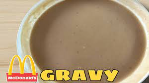

Gravy Recipe
Gravy Recipe Link

Description
This will be your guide on how to make your own gravy at home.
Ingredients
- 2 tablespoon - butter
- 1 piece - knorr beef cube
- 1/3 cup - all purpose flour
- 2 1/2 cup - water
- 1/2 teaspoon - pepper powder
- 2 tablespoon - soy sauce
Steps
- Melt 2 tbsp of butter in a pan
- Dissolve the 1 piece of knorr beef cube and mix it together with the melted butter
- Put 1/3 cup of all purpose flour and mix throughly. We're creating a roux mixture
- Add 2 1/2 cup of water and continue stirring the pan
- While stirring, sprinkle 1/2 teaspoon of pepper powder and continue mixing the ingredients
- Lastly, put 2 tablespoon of soy sauce and continue stirring until it becomes viscous and thick in low heat
home